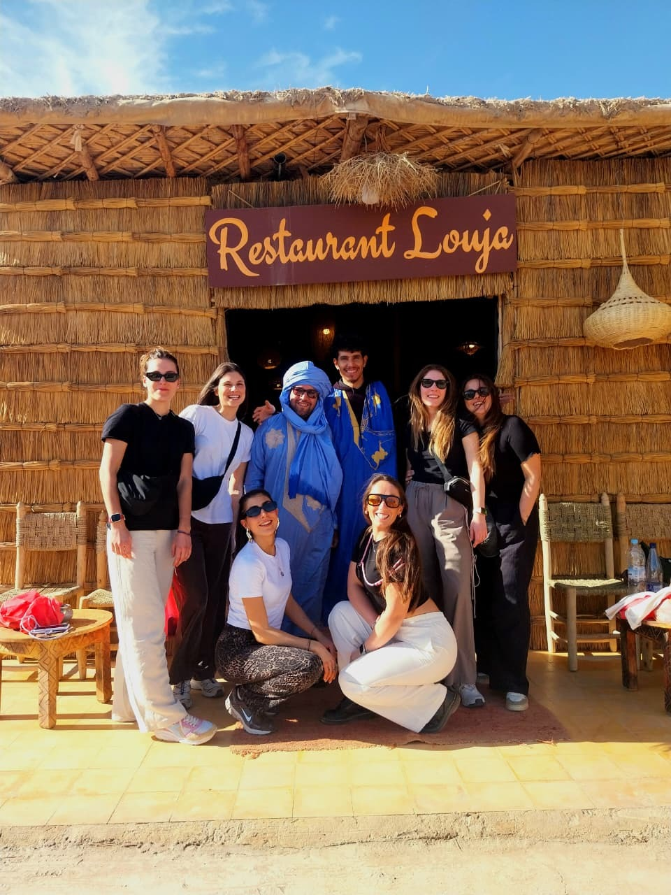
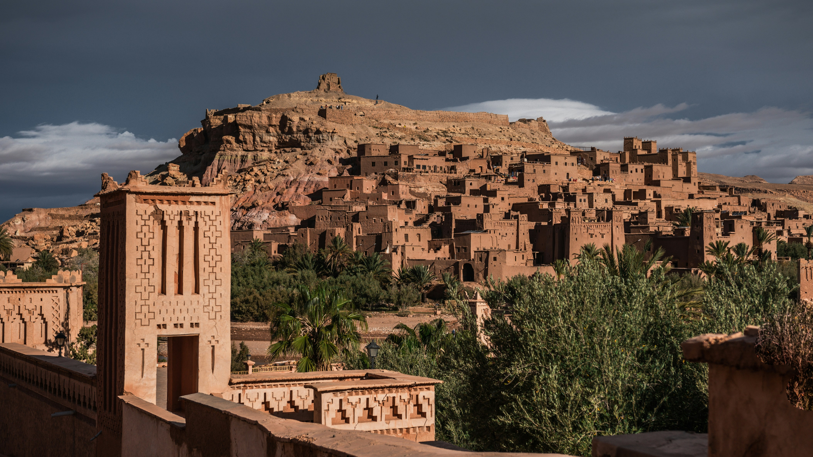
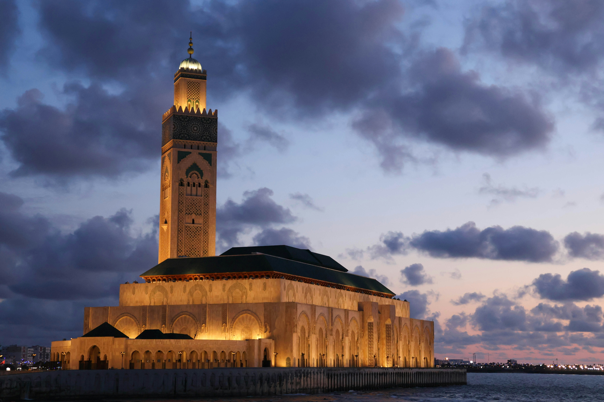
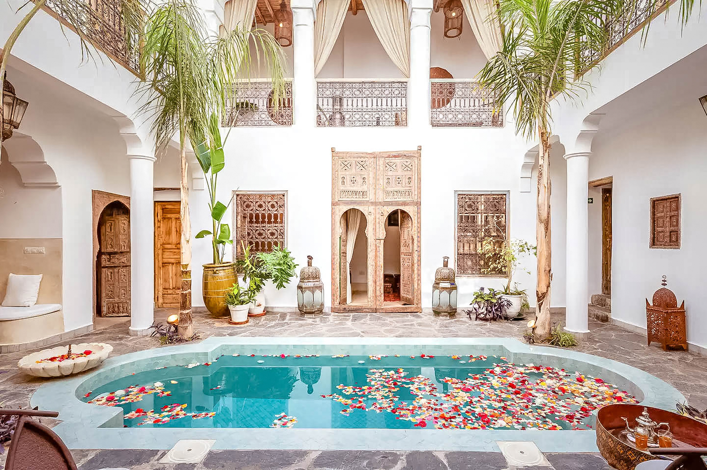
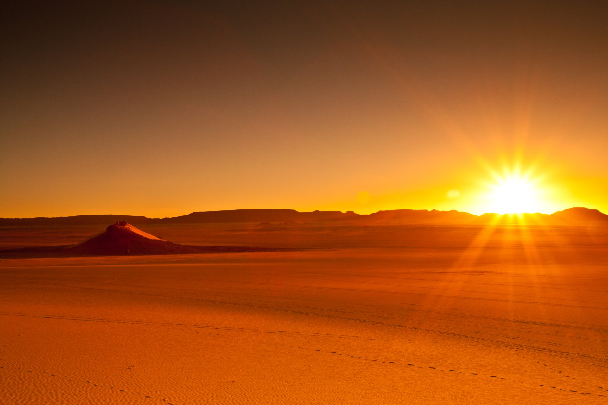
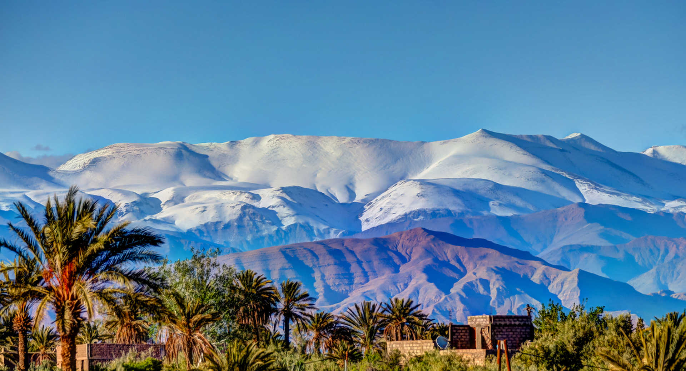
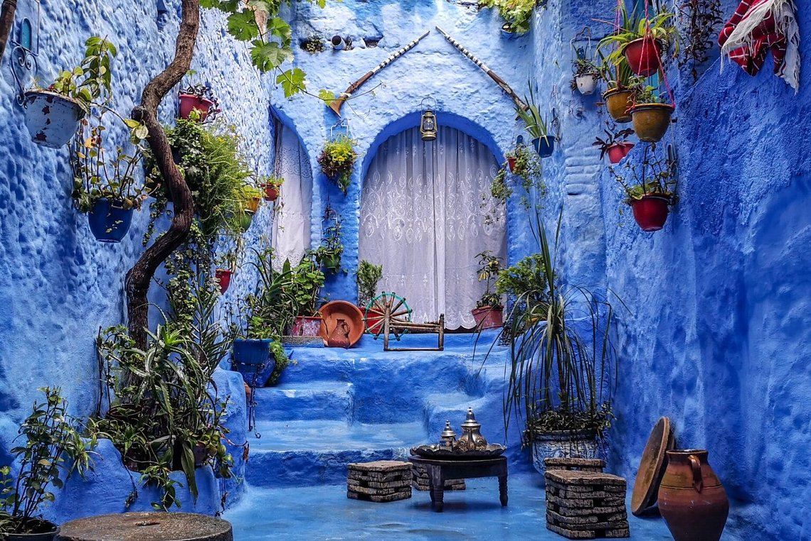
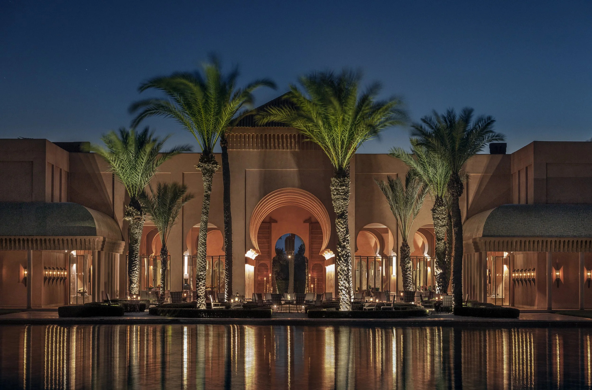

5 Days
5 Days
5 Days Marrakech Desert Tour
Tizi n'Tichka · Skoura · Todra Gorge · Merzouga · Ait Ben Haddou
- Camel trek & luxury Sahara camp
- UNESCO Ait Ben Haddou Kasbah
- Sunrise over Erg Chebbi dunes

Marrakech · Sahara · Atlas · Fes · Tangier
Private Luxury Tour Experiences Across Morocco
Discover More
A journey crafted for you
Our Story
Louja Tours was born from a single conviction: that Morocco is best discovered not through a checklist, but through feeling — the warmth of a welcome, the scent of orange blossom in a riad courtyard, the hush of the desert at dusk.
We are a boutique house of private travel design, working with a small number of guests at a time so that every detail — the car, the guide, the table, the light — is considered with care. From 2-day Sahara escapes to 13-day grand explorations, each journey belongs to no one else but you.
What We Offer
Not a package. Not a checklist. A way of moving through Morocco that is entirely your own — shaped around your pace, your curiosity, your sense of wonder.
Every journey is designed exclusively for you — private vehicles, private guides, private moments, away from the crowd.
No fixed routes. We listen first, then shape an experience around your rhythm, your interests, and your sense of time.
From hidden riads to artisan ateliers, we open doors that remain closed to the casual traveler.
Curated stays, refined dining, and attentive service at every turn — hospitality as an art form.
From the Sahara's Erg Chebbi dunes to the High Atlas passes — Morocco's most dramatic landscapes, privately revealed.
Every detail is chosen to move you — because true luxury is a feeling that lingers long after the journey ends.
Where We Take You
25+ private tours departing year-round. Filter by your starting city.
5 Days
Tizi n'Tichka · Skoura · Todra Gorge · Merzouga · Ait Ben Haddou
 4 Days
4 Days
Ait Ben Haddou · Dades Gorge · Todra · Merzouga · Ouarzazate
 10 Days
10 Days
Casablanca · Rabat · Chefchaouen · Volubilis · Fes · Sahara · Marrakech

7 DaysAit Benhaddou · Todra · Sahara · Fes · Volubilis · Chefchaouen · Casablanca
6 Days
Ait Ben Haddou · Skoura · Todra · Merzouga · Fes · Chefchaouen
 5 Days
5 Days
Telouet · Ait Ben Haddou · Rose Valley · Todra · Merzouga · Khamlia · Ifrane
4 Days
Ait Benhaddou · Todra · Merzouga · Khamlia · Mefis · Tafilalet · Ifrane · Fes
Ait Ben Haddou · Rose Valley · Skoura · Todra · Merzouga · Rissani · Ifrane
3 Days
Ait Ben Haddou · Ouarzazate · Todra · Merzouga · Draa Valley · Anti-Atlas
2 Days
Tizi N'tichka · Ait Ben Haddou · Agdez · Draa Valley · Zagora Sahara

13 DaysRabat · Assilah · Tangier · Chefchaouen · Fes · Sahara · Marrakech · Essaouira
10 Days
Rabat · Chefchaouen · Volubilis · Fes · Sahara · Todra · Ait Ben Haddou · Marrakech
9 Days
Marrakech · Ait Ben Haddou · Sahara · Fes · Chefchaouen · Volubilis · Rabat
7 Days
Rabat · Chefchaouen · Meknes · Fes · Merzouga · Todra · Ait Ben Haddou · Marrakech
Volubilis · Meknes · Fes · Ifrane · Merzouga · Todra · Ait Ben Haddou
12 Days
Meknes · Volubilis · Chefchaouen · Tangier · Rabat · Casablanca · Marrakech · Sahara · Fes
Meknes · Rabat · Casablanca · El Jadida · Essaouira · Marrakech
Ifrane · Azrou · Erfoud · Merzouga · Khamlia · Rissani · Todra · Ouarzazate · Telouet
4 Days
Ifrane · Azrou · Merzouga · Khamlia · Mifis Mines · Rissani · Todra · Ait Benhaddou
3 Days
Ifrane · Azrou Cedar Forest · Midelt · Ziz Gorges · Merzouga · Khamlia · Rissani
3 Days
Middle Atlas · Merzouga Sahara · Tinghir · Todgha Canyon · Skoura · Ait Ben Haddou
 12 Days
12 Days
Tetouan · Chefchaouen · Fes · Merzouga · Todra · Ouarzazate · Marrakech · Essaouira
10 Days
Chefchaouen · Fes · Merzouga · Todra · Marrakech · Casablanca
Chefchaouen · Volubilis · Meknes · Fes · Ifrane · Merzouga · Todra · Ait Ben Haddou
4 Days
Rif Mountains · Chefchaouen · Fes · Ifrane · Merzouga · Todra · Ait Benhaddou
All tours are private, year-round, and fully customizable. Dates, pace, and stops are yours to shape.
Request a Custom TourMoments Captured





Words From Our Guests
"Every single detail felt considered. This wasn't a tour — it was a journey designed entirely around us. Truly unforgettable."
"From the first message to the final farewell, Louja Tours delivered a level of refinement I've rarely experienced. Pure elegance."
"The Sahara evening they arranged for us still feels like a dream. Quiet, intimate, and impossibly beautiful."
"They understood exactly what we wanted before we did. Effortless, private, and genuinely luxurious from start to finish."
"A masterclass in hospitality. Morocco revealed itself to us in a way we never could have found alone."
Begin Your Journey
Share a few details and one of our travel designers will reach out personally to begin shaping an experience entirely your own.
Tour
Route description
Desert Tour
Day by Day
Included
Not Included
All tours are private and fully customizable — pace, stops, and accommodation can be tailored to your preferences.
Reserve Your Place
Share your travel details and one of our designers will personally confirm availability and tailor the experience to you.